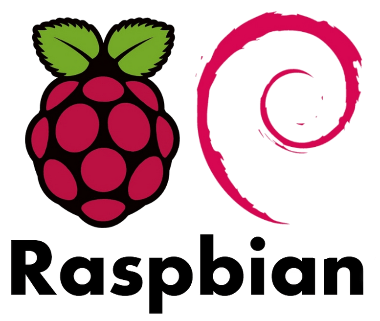

¿Qué es Raspberry Pi?
Raspberry Pi es básicamente un ordenador, pero con la particularidad de que es a tamaño reducido y además muy barato, se desarrollo en el Reino Unido por la fundación Raspberry PI (Universidad de Cambridge) en 2011, con el objetivo de hacer más dinámica la enseñanza de la informática en las escuelas, posteriormente en 2012 se empezo a comercializar.

Hardware
Cómo dijimos anteriormente Raspberry PI es una pequeña placa, pero el hardware que lo compone es bastante potente (según nuestras necesidades).
Actualmente existen dos modelos diferentes PI 1,2,3,etc.. según el modelo A o B, que básicamente se diferencian en que el modelo A tiene solo un puerto USB, y carece de tarjeta de red Ethernet, tiene 256MB de RAM (1GB los otros modelos), y además incorpora tarjeta de red tanto por cable (Ethernet) como inalámbrica (Wifi), así como Bluetooth.
CPU: La CPU en general es ARM segun su modelo la velocidad del relog puede variar de 700MHz(PI 1) a 1,2GHz(PI 3)
GPU: La GPU que utiliza en todas es una Broadcom VideoCoreIV en 1080p.
RAM: Raspberry Pi 3 ya llega a 1GB de RAM
Almacenamiento: Si bien esto puede ser una ventaja o desventaja según veamos su almacenamiento hasta el momento sigue siendo el mismo mediante una tarjeta MicroSD, aunque hay gente que ha podido usar USB como almacenamiento de momento oficialmente su almacenamiento es en MicroSD.

Software
La Placa Raspberry Pi usa mayoritariamente sistemas operativos GNU/Linux, el S.O oficial es Raspbian derivado de Debian que esta optimiza para el hardaware de la raspberry.
Aunque También se le puede instalar otros sistemas operativos por ejemplo, ubuntu Snappy core(solo servidor sin escritorio gráfico), Ubuntu Mate(tiene escritorio gráfico), además de otras derivaciones de S.O que ofrecen otro servicio completamente diferente, es el caso de OSMC o XBMC para uso de Media Center.
